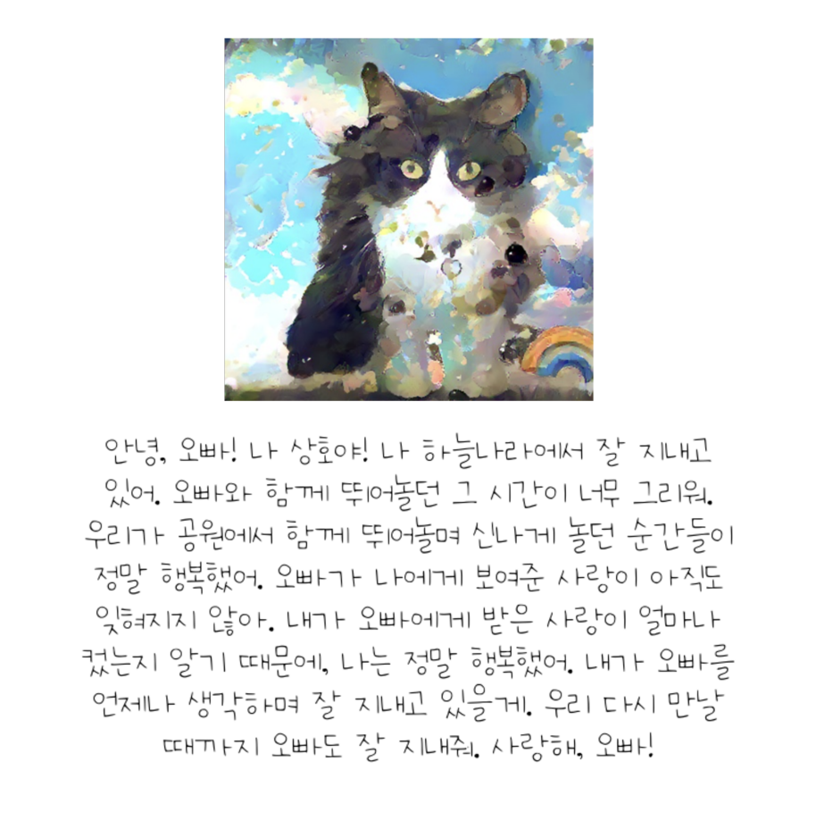
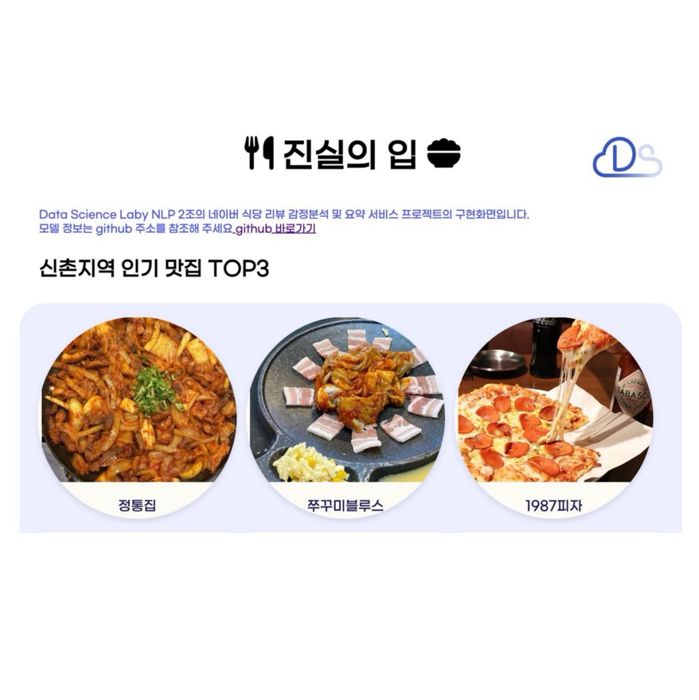
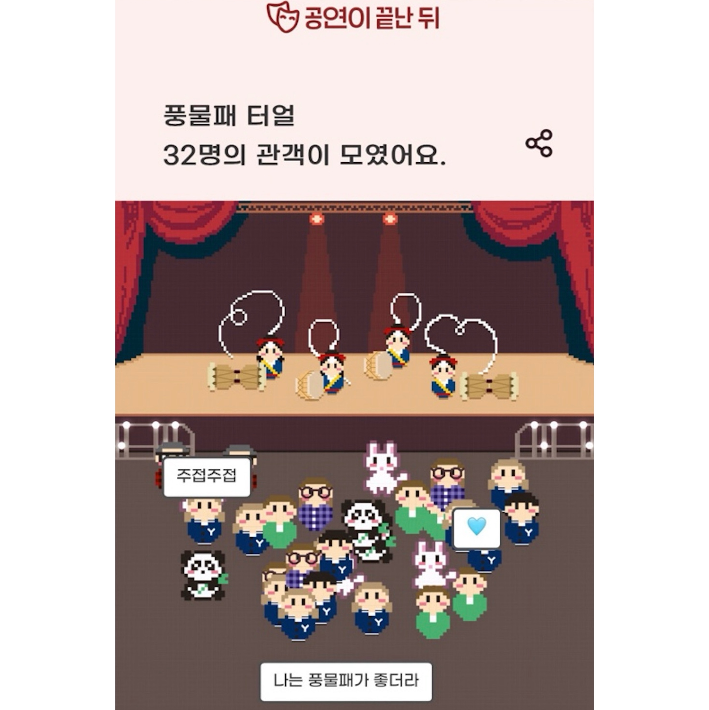

|
Chaemin Hwang
I am an undergraduate student at
Yonsei University,
majoring in Sociology with a minor in
Applied Statistics.
My research goal is to leverage AI to address
real-world social challenges.
I'm particularly interested in developing robust, fair, and trustworthy AI systems
that can operate reliably under real-world constraints.
Ultimately, I aim to advance AI that meaningfully supports society
and drives positive real-world impact.
Email /
CV /
Github
|

|

|
Yonsei University, Seoul, Republic of Korea
Mar. 2021 – Feb. 2026
B.A. in Sociology with a Minor in Applied Statistics
Advanced Major in AI Convergence
GPA: 3.89 / 4.30
|
Research Experience
EDGE AI Lab,
led by Prof. Dongjun Han, Yonsei University
Aug. 2025 - Nov. 2025
Topic: Personalization with Federated Domain Generalization
Social Networks & Neuroscience Lab,
led by Prof. Yoosik Youm, Yonsei University
Jan. 2023 - Jul. 2023
Topic: ㅊ
|
Projects

|
Monocular Dog Body Length Estimation
This work is part of 24-2 Yonsei DSL Corporate Project supported by
PetNow,
Seoul AI Hub,
and advised by
Prof. Taeyoung Park.
Improving a dog body length estimation model. Based on pose estimation and depth estimation models,
we improve 2d-to-3d transformation with camera intrinsic parameters.
Due to security issues, the materials cannot be disclosed.
|
|

|
Memorial Pet Contents Generation
This work is part of 24-2 Yonsei DSL Modeling Project.
Generating a memorial pet content for owners grieving the loss of their pets.
We utilize Stable Diffusion with ControlNet and LLaMA fine-tuned with LoRA.
Our code is available here.
|
|
|
Audio Sentiment Classification
This work is part of 24-1 Yonsei DSL Corporate Project supported by WesomE.
Developing a lightweight model (under 500MB) for recognizing emotions from speaker's voice data,
focusing on feature augmentation through analyzing high-frequency details.
Due to security issues, the materials cannot be disclosed.
|
|

|
Sentiment Analysis using Restaurant Review
This work is part of 24-1 Yonsei DSL Modeling Project.
Conducting restaurant review sentiment analysis by fine-tuning KoELECTRA and
generating summaries using the GPT API.
We deploy the results through a web-based interface.
Our code is available here.
|
|

|
Performance Review Archiving Service
This work is part of 23-2 Social Data Research and Analysis (SOC4704)
with Yeonghoo Pyo, Jeonghoon Ko, Yejin Heo, and advised by
Prof. Jeonghan Kang.
Developing a review archiving service for campus performance clubs to improve performance quality
and enhance audience engagement.
Improved User Experience through interviews with club leaders and audience members.
We published our book!
here /
Our presentation is available
here
|
|
Honors and Awards
Mentoring Scholarship, Lotte Foundation
Math mentoring volunteering for middle school students
at a local children's center (2022.09 ~ 2025.02)
Certification, 5th LG Aimers/Data Intelligence
LG Aimers: Online AI Education and Hackathon (2024.08 ~ 2024.09),
held by LG AI Research.
Topic: Developing a product defect detection model based on process data.
CLIO Social Data Science Development Scholarship
A scholarship given to motivate and encourage learning
in the field of social data science (2023.05)
|
Miscellanea
Yonsei Data Science Lab
11th Regular Member (Dec. 2023 - Dec. 2024)
Yonsei Data Science Lab (DSL)
is a student community under the Department of Applied Statistics at Yonsei University,
advised by
Prof. Taeyoung Park.
Yonsei DSL focuses on studying and applying various theories related to Data Science and
Machine Learning, based on statistical theory.
|
|
Last updated on Nov 24, 2025.
© 2025 Chaemin Hwang. All rights reserved.
Design and source code adapted from
Jon Barron's website.
|
|